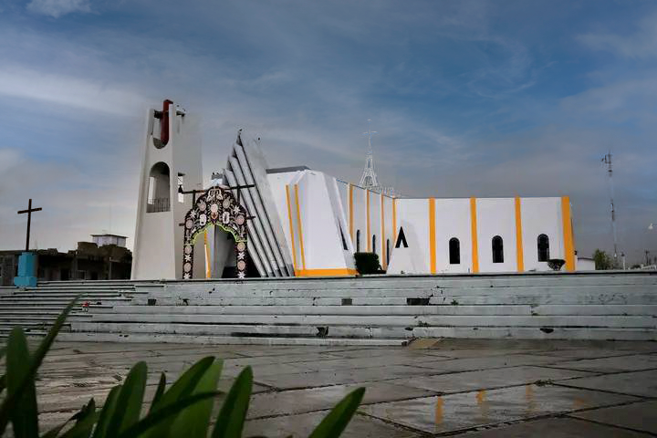

<div class="d-none d-sm-none d-md-block " style="margin-top: 50px;">
    <div class="row">
        <div class="col-2"></div> 
        <div class="col-5" >
        <h1 class="tit">Ceremonia Religiosa </h1>
        <h1 class="tex" style="text-align: center;">Parroquia de San Jose</h1>
        <h1 class="tex" style="align-items: center;"><i class='bx bxs-map bx-sm' style="color: #1C4C96; border: 2px solid #1C4C96; border-radius: 20px; box-sizing: content-box; padding-top: 2px; padding-bottom: 2px; padding-right: 2px; padding-left: 2px;"></i> Av.Felipe Chávez, El Cerrillo Vista Hermosa.</h1>
        <h1 class="tex"> <i class='bx bx-calendar bx-sm' style="color: #1C4C96; border: 2px solid #1C4C96; border-radius: 20px; box-sizing: content-box; padding-top: 3px; padding-bottom: 2px; padding-right: 2px; padding-left: 2px;"></i> Sábado, 06 de Abril 2024.</h1>
        <h1 class="tex"><i class='bx bx-time bx-sm'  style="color: #1C4C96; border: 2px solid #1C4C96; border-radius: 20px; box-sizing: content-box; padding-top: 3px; padding-bottom: 2px; padding-right: 2px; padding-left: 2px;"></i> 03:00</h1>
        <br>
        <div style="align-items: center; text-align: center; justify-content: center;">
            <a href="https://www.google.com.mx/maps/place/Iglesia+(San+Jose)+El+Cerrillo+Vista+Hermosa/@19.3230302,-99.5439085,18z/data=!4m6!3m5!1s0x85d20aab75c318d5:0xf93331786990dca!8m2!3d19.3230219!4d-99.5428094!16s%2Fg%2F11c0t9n2q0?entry=ttu" target="_blank">
                <button  class="" style="background-color: #1C4C96; color: aliceblue; border: none; border-radius: 5px; padding: 5px 20px 5px 20px;">Ver Mapa</button>
            </a>
        </div>
        </div>
        <div class="col-5">
            
        </div>
    </div>
    <div class="row">
        <div class="col-2"></div>
        <div class="col-8">
            <
        </div>
    </div>
</div>
<div class="d-block d-sm-block d-md-none">
    <div>
        <h1 class="tit">Ceremonia Religiosa </h1>
        <h1 class="tex" style="text-align: center;">Parroquia de San Jose</h1>
        <h1 class="tex1 mt-4" style="align-items: center;"><i class='bx bxs-map bx-xs' style="color: #1C4C96; border: 2px solid #1C4C96; border-radius: 20px; box-sizing: content-box; padding-top: 2px; padding-bottom: 2px; padding-right: 2px; padding-left: 2px;"></i> Av.Felipe Chávez, El Cerrillo Vista Hermosa.</h1>
        <h1 class="tex1"> <i class='bx bx-calendar bx-xs' style="color: #1C4C96; border: 2px solid #1C4C96; border-radius: 20px; box-sizing: content-box; padding-top: 3px; padding-bottom: 2px; padding-right: 2px; padding-left: 2px;"></i> Sábado, 06 de Abril 2024.</h1>
        <h1 class="tex1"><i class='bx bx-time bx-xs'  style="color: #1C4C96; border: 2px solid #1C4C96; border-radius: 20px; box-sizing: content-box; padding-top: 3px; padding-bottom: 2px; padding-right: 2px; padding-left: 2px;"></i> 03:00</h1>
        <div style="align-items: center; justify-content: center; text-align: center;margin-bottom: 20px;">
            
            <br>
            <a href="https://www.youtube.com"
   style="display: inline-block; background-color: #1C4C96; color: aliceblue; border: none; border-radius: 5px; padding: 5px 20px; text-decoration: none;">
   Ver Mapa
</a>
<a href="https://www.linkedin.com/in/alexis-estrada-evangelista-a69224211/" target="_blank"><i class='bx bxl-linkedin-square bx-lg bx1'></i></a>
        </div>
    </div>
</div>